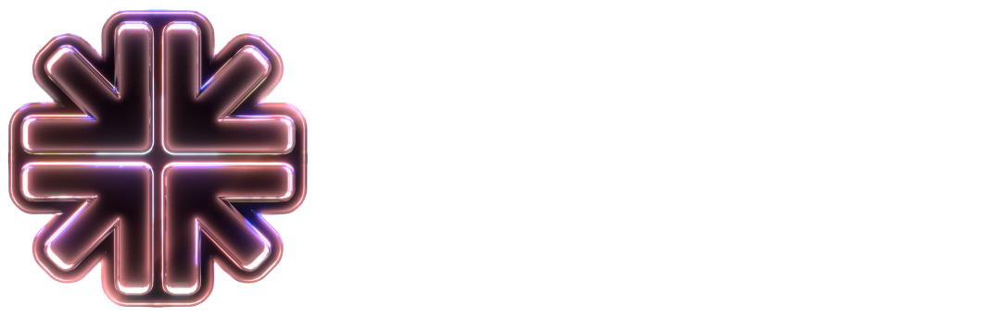
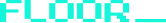

dyor@ltd:~$ cat about.txt
DYOR
Do Your Own Research Ltd.
We provide consultancy and development services to crypto protocols, products, and applications that are looking to build best-in-class user experiences.
# We specialise in building applications on EVM compatible chains.
dyor@ltd:~$ ls ./projects/active
dyor@ltd:~$ ls ./projects/past
-

flaunch -

sophon -

nftx -

floordao -
rpc-speedtest by eden
-
sokel
-
mevpanda
- treasure
dyor@ltd:~$ mail gm@dyor.ltd